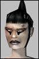

| Author | Thread |
Cloudehxx
Supa Leet
 Registered: Aug 2002
Posts: 354 | Guards Looks like the guards on test have been Upgraded :P
In omni areas they all wear elite armor now and some places they have increased in amount, looks like someone listen to that guard killing Whine.
The harder the better  |
assassimon
Clan Apocalypse
 Registered: Nov 2001
Posts: 1523 | They are actually harder to kill too, or just changed the look? |
Atremis
Soleet
Registered: Feb 2002
Posts: 86 | FC ought to toss a few Battlesuit-clad soldiers in too, if not for actual protection, but for atmosphere. =) |
Joaquin
Leet
 Registered: Aug 2002
Posts: 17 | Current System: lvl160 MA + UVC + HE = Unkillable Chat Spam
Ive seen MAs take down Omni Pol Supremes with little to no effort, the Guards need to be ALOT tougher anit that why they are meant to be guards................ |
Cloudehxx
Supa Leet
Registered: Aug 2002
Posts: 354 | Oh no, the guards are not that hard to kill.
And I doubt an MA needs HE, if my enf can kill one I have no doubt a ma my level can. 
Just more competition, rookie omni troops! :P |
Nieth
Supa Leet
Registered: Feb 2002
Posts: 240 | i think it's more of a plot thing, with the ICC in town omni-tek upgrades its military might which it keeps active, as a show of power
and in case the ICC does something OT finds to be an act of war |
Springygirl
Leetas
 Registered: Aug 2002
Posts: 103 | quote:
Originally posted by Vera
Ive seen MAs take down Omni Pol Supremes with little to no effort, the Guards need to be ALOT tougher anit that why they are meant to be guards................
Who the hell said anything about MAs? Any gimp can clear an entire city of guards, not just overrated MAs, Vera.
FC, raise guards to lvl 250, then put about 20 of them near every possible entrance to every city. Finally we might have a challenge. |
Cloudehxx
Supa Leet
Registered: Aug 2002
Posts: 354 | Trust me these new guards are tough, but not tough enough :P |
Karanya
Supa Leet
Registered: Aug 2002
Posts: 213 | Hope they're harder to kill than the GM-controlled guards we ganked at ICC headquarters. Heh heh.
Actually, those guys had mega health, it took forever to beat them down  But they only hit for 15.
--K |
Saruzi
Supa Leet
 Registered: Dec 2001
Posts: 373 | D'oh! Just when I get to the stage when guards start conning colors other than deep red they make them harder. Sigh...but its a good thing overall, but I think its more in response to the ICC then a gameplay issue. |
Joaquin
Leet
Registered: Aug 2002
Posts: 17 | Raadiance your right any proffession can take down a guard but i was using MAs as an example and for that matter any healing proffesion never even needs to sit to have a piece of the guards. Where the non healers might have to Sit every 10 mins to get back the 500 HP they lost from battling 7 guards
I can take down guards with my 180 engy with no pet it anit hard, but what do these guards protect us from?
The guards stronger at the galway castle then in Omni 1 Ent/Trade wouldnt it be the other way around, Your meant to Protect your main city with Strong Troops not out in some remote OP where no one or NPC ever goes |
Hajkster
Supa LeetRegistered: Mar 2002
Posts: 832 | quote:
Originally posted by Raadiance
Who the hell said anything about MAs? Any gimp can clear an entire city of guards, not just overrated MAs, Vera.
FC, raise guards to lvl 250, then put about 20 of them near every possible entrance to every city. Finally we might have a challenge.
just dont make the omni ent guards stronger =p
Jumped beside the Rhompa bar and see a Omni Male guard... (Red to me at lvl 200) and he really really Resist alot of calms =p |
BoomDoom
Phear Leet
Registered: Apr 2002
Posts: 360 | quote:
Originally posted by Nieth
i think it's more of a plot thing, with the ICC in town omni-tek upgrades its military might which it keeps active, as a show of power
and in case the ICC does something OT finds to be an act of war
Plot thing?
Huh?
I thought we were just supposed to level |
Rayfield...
Phear Leet
 Registered: Mar 2002
Posts: 245 | quote:
Originally posted by Atremis
FC ought to toss a few Battlesuit-clad soldiers in too, if not for actual protection, but for atmosphere. =)
head out to the Omni domes near the south end of Avalon zone. u'll see several battlesuit guys wandering around there. before BS became immensely popular, i've gotten mission from there once or twice. it's the farthest point i can find on the map, for a lv40-50 trying to doing high reward missions. =) |
Atremis
Soleet
Registered: Feb 2002
Posts: 86 | I knew about the Avalon guards... Thing is, how many people typically find themselves way out there in the middle of bufu land?
B-Suit guards in Omni-1, I say! |
BoomDoom
Phear Leet
Registered: Apr 2002
Posts: 360 | quote:
Originally posted by Atremis
I knew about the Avalon guards... Thing is, how many people typically find themselves way out there in the middle of bufu land?
B-Suit guards in Omni-1, I say!
Hell with that, B-suit Omni guards in the middle of TIR!
Just to keep the clan guys on their toes |
Shatai
Supa Leet
 Registered: Apr 2002
Posts: 210 | Sure, plonk a battalion of resource-chewers in the middle of Lag Central, start up mass-combat.
Perma-crash the Tir zone, why don't you |
Mercatura
Supa Leet
 Registered: Apr 2002
Posts: 865 | I seem to recall a certain clan trader coming to ent and sitting on top of the sign. Fixer hot, rrfe and stims were all he needed. 2 nice energy bracers of course. He stayed until his rrfe ran out, got his fixer hot refreshed by some omni.
Some people even pulled extra guards from north whompas and exits to OF, not that it did anything. I think he haggled himself once or twice.
Guards are too wimpy and often in the wrong places |
Lucid Flow
Supa Leet
 Registered: Nov 2001
Posts: 585 | Nieth, why is your Sig so bad? It's so hard to distinguish what is your post and what is your sig. Change it. :P |
Gearbox
Phear Leet
Registered: Mar 2002
Posts: 414 | Yay, you can kill tough guards. You're the king of everything. Yay for you. |
All times are GMT.


 Last Thread Next Thread
Last Thread Next Thread 
 September 6th, 2002 08:54
September 6th, 2002 08:54